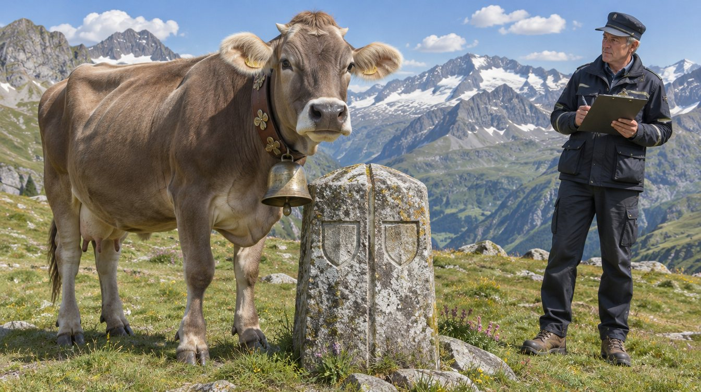

Kuh «Bella» erhält Ausnahmebewilligung für zwei Kantone gleichzeitig
Weil ihre Lieblingsweide exakt auf der Grenze zwischen Uri und Glarus liegt, darf die Braunviehkuh «Bella» künftig offiziell in beiden Kantonen gesömmert werden. Die Verfügung wurde beiden Kantonen in derselben Sekunde eröffnet.

Das Bundesamt für besondere Angelegenheiten (BBA) hat der Braunviehkuh «Bella» eine Ausnahmebewilligung für die gleichzeitige Sömmerung in zwei Kantonen erteilt. Mit der Verfügung vom 21. Oktober 2026 (Aktenzeichen BBA-E2-2026-00417) endet ein Verfahren, das im Juni mit einer Meldung der zuständigen Alpgenossenschaft begonnen hatte. Die Verfügung wurde den Kantonen Uri und Glarus gleichzeitig eröffnet – nach Angaben der Sektion Fristen und Pünktlichkeit mit einer Abweichung von weniger als einer Sekunde.
Wie es dazu kam
Die Weide, auf der Bella seit drei Sommern bevorzugt steht, wird von einem historischen Grenzstein exakt halbiert. Nach den Beobachtungen der Älplerin frisst Bella morgens auf der Urner und nachmittags auf der Glarner Seite, liegt zum Wiederkäuen aber bevorzugt quer zur Grenze. Beide Kantone hatten die Kuh als bei sich gesömmert gemeldet und Sömmerungsbeiträge beansprucht. Da kein Kanton auf Bella verzichten wollte und keine Verordnung den Fall einer exakt halbierten Kuh vorsieht, ging die Akte mit dem Vermerk «besonders» nach Bern.
Sektionschef Josef Zgraggen nahm im August einen zweitägigen Augenschein vor. Dabei wurde Bellas Gewichtsverteilung mit zwei geeichten Viehwaagen gemessen, je eine pro Kanton. Das Ergebnis lautete 50,3 Prozent Uri und 49,7 Prozent Glarus, was innerhalb der amtlichen Messtoleranz liegt. «Bella hat sich nie für einen Kanton entschieden, und wir respektieren das», sagte Zgraggen. «Eine Kuh ist keine Stimmbürgerin. Sie muss sich nicht festlegen.»
Die beiden Kantone wurden im Verfahren angehört. Sektionschef Lukas Wyss, der die kantonalen Stellungnahmen einholte, sprach von einem «geordneten Verfahren mit vier Stellungnahmen, zwei Gegenstellungnahmen und einer gemeinsamen Erklärung, wonach beide Kantone Bella sehr schätzen». Ein Kanton hatte zwischenzeitlich angeregt, die Kantonsgrenze um 40 Zentimeter zu verschieben. Der Vorschlag wurde mit Hinweis auf die Folgen für alle übrigen Kühe der Alp verworfen.
Was die Bewilligung regelt
Die Ausnahmebewilligung stützt sich auf Art. 7 BABG und ist bis zum Alpabzug 2031 befristet. Sie enthält drei Auflagen. Erstens muss die Glocke der Kuh künftig mit beiden Kantonswappen versehen werden, links mit jenem von Uri, rechts mit jenem von Glarus. Zweitens werden die Sömmerungsbeiträge hälftig geteilt; für den Rappen, der bei der Teilung übrig bleibt, führt das BBA ein Ausgleichskonto. Drittens hat die Alpgenossenschaft jeden einseitigen Aufenthalt von mehr als 24 Stunden mit dem Formular BBA-207a zu melden.
Sektionschef Urs Baumann bestätigte, dass es sich um die erste Ausnahmebewilligung für ein Rind seit 1987 handelt. «Damals ging es um eine Simmentalerin, die an einer Landsgemeinde zusehen durfte. Bellas Fall ist rechtlich anspruchsvoller, weil sie nicht nur zuschaut, sondern frisst», sagte Baumann. Die Prüfung dauerte insgesamt zwei Monate und schöpfte die gesetzliche Frist damit auf den Tag genau aus.
Nach Eintritt der Rechtskraft wird der Fall im Eidgenössischen Register besonderer Angelegenheiten (ERbA) eingetragen. Bella selbst hat sich zur Verfügung nicht geäussert. Nach Auskunft der Älplerin hat sie die Eröffnung «ruhig und wiederkäuend» zur Kenntnis genommen.
Hinweis für Gesuchstellende: Wer ein Tier hält, das sich regelmässig auf einer Kantons- oder Gemeindegrenze aufhält, kann eine Ausnahmebewilligung mit dem Formular BBA-207 beantragen. Fotos des Tiers auf der Grenze sind beizulegen, sofern das Tier dazu bereit ist.